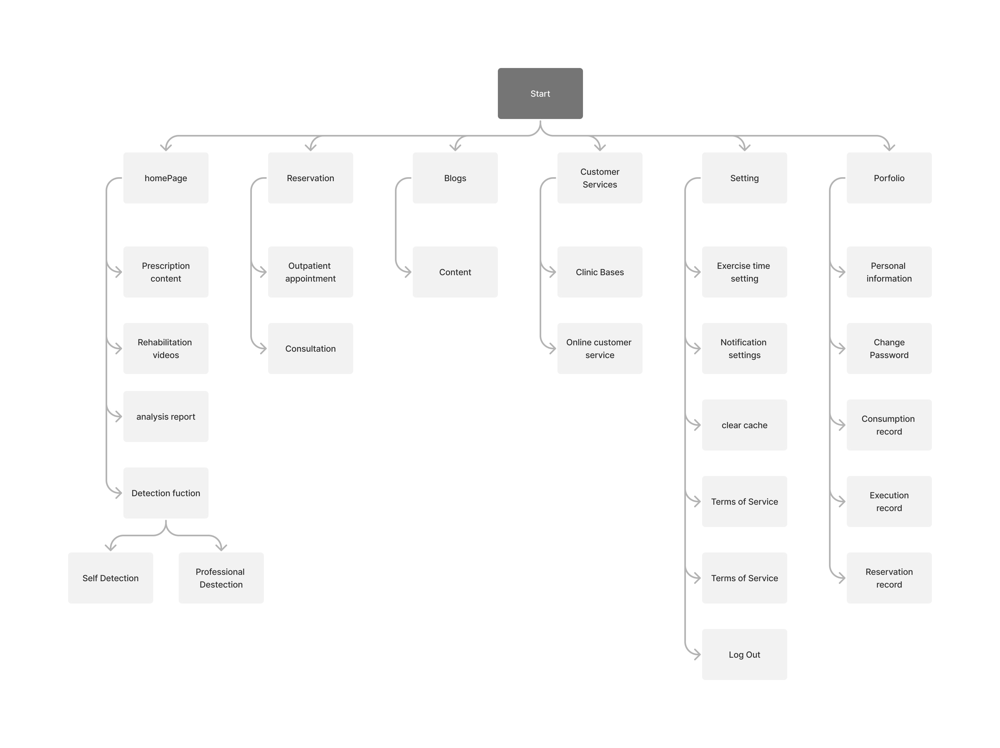
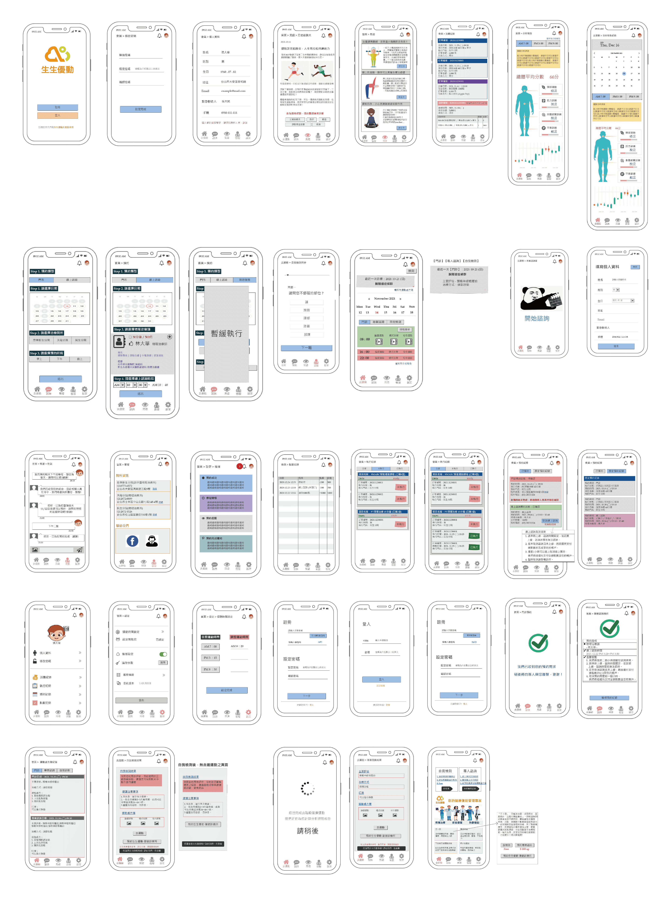
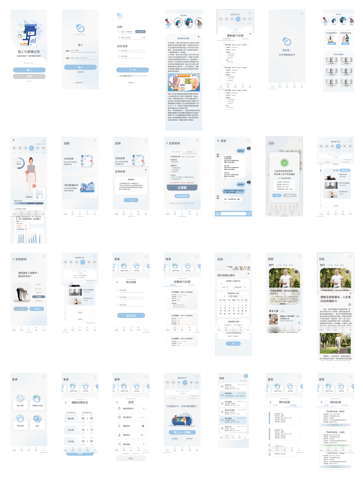

Physiotherapy App
Researcher / Commuication / Prototype
This app is designed to support patients in maintaining a regular at-home rehabilitation routine, featuring exercise reminders, instructional videos, and progress analysis. It enables healthcare professionals to monitor patients' rehabilitation status remotely. Moreover, the app also offers self-assessment and rehabilitation tools for individuals not currently under direct medical care, providing a solution for immediate physical discomfort.


How can we facilitate at-home rehabilitation for the elderly
In response to the challenges elders face with public outings, especially during inconvenient times, our project introduces an innovative application developed for the company's physical therapy clinic. This app provides a seamless solution, enabling users to conduct straightforward self-assessments and receive customized rehabilitation plans. With an emphasis on clarity and ease of use, the app dispenses precise instructions and exemplifies user actions, ensuring that individuals can confidently undertake their rehabilitation exercises at home.
By bridging the gap between the need for physical therapy and the convenience of receiving it at home, this app aims to empower the elderly to maintain their independence and enhance their quality of life through accessible, tailored rehabilitation support.
Site map
Solution
Within the R&D team at our company, my collaboration with the Product Manager was pivotal in prioritizing usability. This commitment led us to conduct in-depth patient interviews, a process crucial for understanding their unique needs and preferences. Furthermore, we engaged with physiotherapists to ensure that the app’s features were precisely tailored to meet professional standards and requirements.
To guarantee the app's flawless functionality, I closely collaborated with our back-end engineers. Our discussions revolved around API logic and functionality, setting the stage for the subsequent development of app prototypes derived from carefully crafted wireframes. This rigorous and methodical approach laid a solid groundwork for the project, ensuring its success from the outset.
Wireframe
Functions & Advantages
Rehabilitation Companion: An App for Elders
-
Personalized Exercise Plans:
Custom routines created by physiotherapists, with scheduled reminders. -
Pain Self-Assessment:
Users answer questions to tailor pain management or book appointments. -
Efficient Communication:
Tracks and shares rehabilitation progress with physiotherapists, reducing costs.
Mockup
Testing & Feedback
In collaboration with physiotherapists and patients, we conducted comprehensive testing of our prototype app during diagnosis and rehabilitation phases, focusing on:
- User Profile Creation: Establishing tailored profiles for each user.
- Rehabilitation Set Verification: Ensuring the app accurately displays prescribed exercises.
- Exercise Video Evaluation: Assessing the quality and effectiveness of instructional videos.
- In-App Exercise Engagement: Facilitating exercise alongside app-guided videos.
- Rehabilitation Reminder Assessment: Gauging the impact of app-generated reminders on user adherence.
- Outpatient Record Examination: Reviewing the integration and utility of outpatient records within the app.
The testing phase yielded promising results, with a notable 40% increase in patient rehabilitation efficiency and enhanced workflow for physiotherapists. Feedback also highlighted a user interest in accessing articles with accurate physiotherapy information, suggesting an area for future app enrichment.